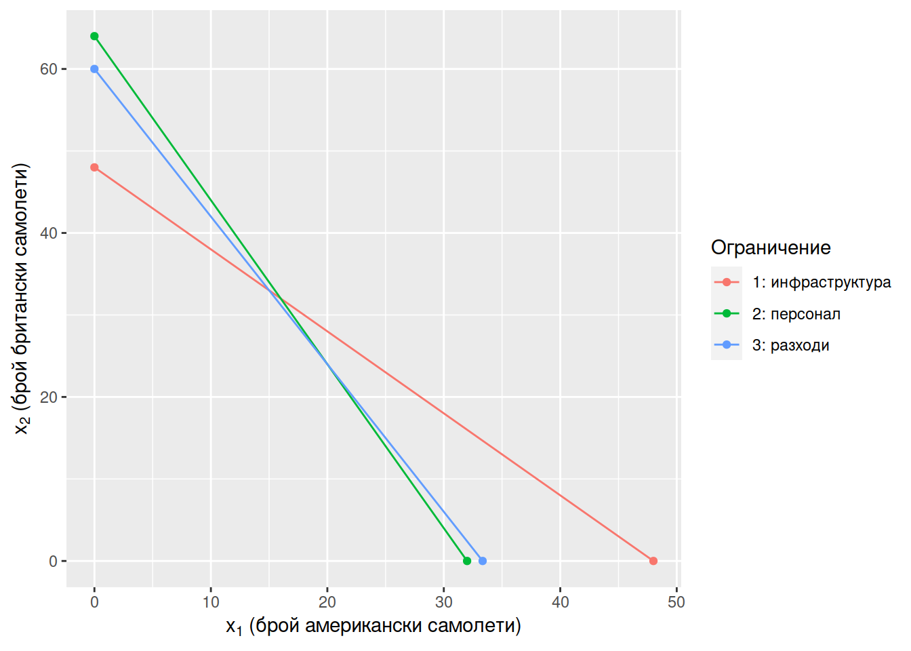
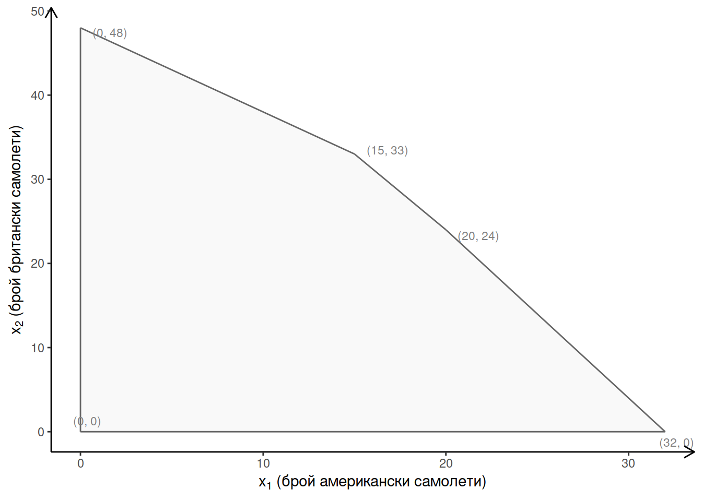

Примери
10/17/2021
Част 1 Въведение в линейното програмиране
1.1 Софтуер
В рамките на курса ще използваме R и R Studio Desktop за водене на
записки повреме на упражненията. Това е техническо решение за целите на онлайн
обучението и не е част от изпита към лекцията.
1.2 Пример 1: Берлински въздушен мост
След края на Втората световна война Германия е разделена на четири окупационни зони: Американска, Британска, Френска и Съветска. Берлин също така е разделен на четири зони, но достъпът до него по суша и по вода минава изцяло през територията на Съветската окупационна зона.

Figure 1.1: Окупационни зони в Германия след края на Втората световна война. Източник: Wikipedia.
1.3 История
На 24-ти юни 1948 Съветският Съюз блокира достъпа до Западен Берлин, с което започва една от най-значимите конфронтации по време на Студената война. Без достъп по суша или вода, западните съюзници започват да снабдяват града по въздух (Берлински въздушен мост).

Figure 1.2: Доставка на сол (река Хафел). Източник: Wikipedia.

Figure 1.3: Приземяване на самолет C-54 (летище Темпелхоф). Източник: Wikipedia.
1.4 Задача
За по-просто нека да приемем, че доставките до Берлин се извършват с два вида самолети: американски, които могат да поемат до 30 000 кубични фута товар (\(\approx 849 m^3\)), и британски самолети с капацитет до 20 000 кубични фута (\(\approx 566 m^3\)).
Поради ограничния в инфраструктурата на ден могат да летят най-много 48 самолета (независимо от кой вид).
За всеки полет на американски самолет има нужда от 16 души персонал, двойно повече от броя нужен за британските самолети. Общо на разположение са 512 души на ден.
Разходите за гориво и поддръжка на самолетите възлизат на 9000 долара за полет на американски самолет и на 5000 долара за полет на британски самолет. Поради бюджетни ограничения общите разходи не могат да надхвърлят 300 000 долара.
Колко британски и колко американски самолети да използва на ден въздушният мост, така че да достави до Берлин възможно най-голямо количество стоки?
1.5 Математически модел
\[ x_1: \text{ брой амер. самолети}\\ x_2: \text{ брой брит. самолети} \]
\[ \max 3 x_1 + 2 x_2 \text{ (общ товар, целева функция, objective)} \\ x_1 + x_2 \leq 48 \text{ (инфраструктура)} \\ 16 x_1 + 8 x_2 \leq 512 \text{ (персонал)} \\ 9 x_1 + 5 x_2 \leq 300 \text{ (бюджет)} \\ x_1 \geq 0 \text{ (брой амер. самолети)} \\ x_2 \geq 0 \text{ (брой брит. самолети)} \] Преди да решим задачата, нека да я решим неформално в опростен вариант, като игнорираме второто и третото ограничение:
\[ \max 3 x_1 + 2 x_2 \\ x_1 + x_2 \leq 48 \\ x_1 \geq 0 \\ x_2 \geq 0 \] Решение:
\[ (x^*_1 = 48, x^*_2 = 0) \]
1.6 Допустимо множество (1)
За да решим задачата (и с трите ограничения) първо ще представим допустимото множество графично, като за целта ще начертаем правите към всяко от петте ограничения (влючително ограниченията за неотрицателност). За да можем да начертаем правите са ни нужни по две точки от всяка права. Най-лесно можем да намерим пресечните им точки с двете оси (\(x_1\) и \(x_2\)).
За всички точки на оста \(x_2\) е изпълнено, че \(x_1 = 0\). Когато заместим с \(x_1 = 0\) в уравнението на всяка от правите ще намерим пресечните им точки с оста \(x_2\). За всички точки от оста \(x_1\) важи, че \(x_2 = 0\), така че когато заместим с \(x_2 = 0\) в уравненията на правите ще получим пресечните им точки с оста \(x_1\).
Права на първото ограничение (инфраструктура):
\[ x_1 + x_2 = 48 \] За да намерим пресечните точки на правата (инфраструктура) с двете оси:
- При \(x_1 = 0\) на колко е равно \(x_2\)? \(0 + x_2 = 48\)
- При \(x_2 = 0\) на колко е равно \(x_1\)? \(x_1 + 0 = 48\)
За да намерим пресечните точки на втората права (персонал) с двете оси:
\[ 16 x_1 + 8 x_2 = 512 \]
- При \(x_1 = 0\) на колко е равно \(x_2\)? \(16 \cdot 0 + 8x_2 = 512 \implies x_2 = 512 / 8 = 64\)
- При \(x_2 = 0\) на колко е равно \(x_1\)? \(16 x_1 +8 \cdot 0 = 512 \implies x_1 = 512 / 16 = 32\)
По същия начин можем да намерим и две точки от правата на третото ограничение (бюджет): (0, 300 / 5) и (300 / 9, 0).

1.7 Допустимо множество (2)
Допустимото множество се състои от всички точки в полигона (0, 0), (32, 0), (20, 24), (15, 33), (0, 48). Изчислението на пресечните точки (20, 24) и (15, 33) засега ще оставим на компютъра.

1.8 Стойности на целевата функция във върховете
Оптималното решение не може да е вътрешна точка за допустимото множество. За да определим кой от върховете на допустимото множество е оптималното решение ще изчислим целевата функция за всеки от върховете.
# Връх (0, 0)
# 3 * 0 + 2 * 0# Връх (32, 0)
3 * 32 + 2 * 0## [1] 96# Връх (20, 24)
3 * 20 + 2 * 24## [1] 108# Връх (15, 33)
3 * 15 + 2 * 33## [1] 111# Връх (0, 48)
3 * 0 + 2 * 48## [1] 96Оптималната комбинация от американски и британски самолети е \((x^*_1 = 15, x^*_2 = 33)\). Общият товар, който могат да пренесат самолетите е \(30000 x_^*_{1} + 20000 x_^*_{2} = 30000 \cdot 15 + 20000 \cdot 33 = 1 110 000\) кубични фута.